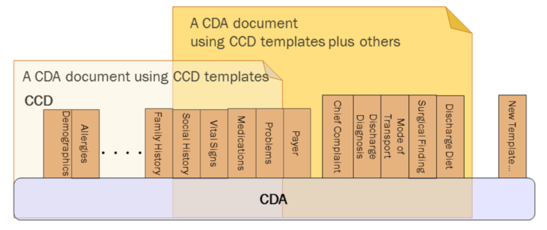

Consolidated CDA Templates for Clinical Notes (US Realm) STU R2.1
2.1.0 - CI Build
Consolidated CDA Templates for Clinical Notes (US Realm) STU R2.1
2.1.0 - CI Build
Consolidated CDA Templates for Clinical Notes (US Realm) STU R2.1 - Local Development build (v2.1.0). See the Directory of published versions
CDA R2 is “… a document markup standard that specifies the structure and semantics of ‘clinical documents’ for the purpose of exchange” [CDA R2, Section 1.1]1. Clinical documents, according to CDA, have the following characteristics:
CDA defines a header for classification and management and a document body that carries the clinical record. While the header metadata are prescriptive and designed for consistency across all instances, the body is highly generic, leaving the designation of semantic requirements to implementation.
CDA R2 can be constrained by mechanisms defined in the “Refinement and Localization”2 section of the HL7 Version 3 Interoperability Standards. The mechanism most commonly used to constrain CDA is referred to as a “CDA template.” The “templated CDA” approach uses a library of modular CDA template definitions. Templates can be reused across any number of CDA document types, as shown in the following figure. Each template meets a defined purpose. Templates are managed over time through versioning. A template version is a specific set of conformance constraints designed to meet the template’s purpose.

There are many kinds of templates that might be created. Among them, the most common are:
A CDA implementation guide (such as this one) includes references to those template versions that are applicable.
Regarding implementation, a CDA instance populates the template identifier (templateId) field where it wants to assert conformance to a given template version. On the receiving side, the recipient can then not only test the instance for conformance against the CDA Extensible Markup Language (XML) schema, but also test the instance for conformance against asserted templates.
Each version of a template has a status. For example, a template version can be draft, active, or deprecated, etc. The HL7 Templates DSTU describes the various status states that may apply to a template version over the course of its lifecycle. Each version of a template has an associated status. Thus, one version of a template may be deprecated, while a newer version of that template may be draft or active.
Several templates used in C-CDA 1.1 were deprecated as of C-CDA R2. The status for these templates remains deprecated in this guide. Deprecation of a template version does not prohibit its use in a document; rather, it is a signal to implementers this version of the template may be permanently retired (terminated) in the future, which will end the lifecycle for the template. The list of deprecated templates appears below:
This R2.1 guide was developed and produced by the HL7 Structured Documents Workgroup. It updates the C-CDA R2 (2014) guide to support “on-the-wire” compatibility with R1.1 systems.
The C-CDA Release 2.0 implementation guide was developed and produced through the joint efforts of HL7, two Sub-Work Groups of the Office of the National Coordinator (ONC) Standards and Interoperability (S&I) Framework — Longitudinal Care Plan (LCP) and Long-Term Post-Acute Care (LTPAC) Transition) — and through the SMART C-CDA Collaborative hosted by ONC and Harvard Medical School. This guide builds off of two earlier versions: C-CDA R1 (2011) and C-CDA R1.1 (2012)3.
The ONC Longitudinal Care Coordination Standards and Interoperability (LCC S&I) Work Group and community providers identified a set of priority data elements for shared care and transfer of care for a patient moving from one setting to another. These data elements identified gaps in the existing CDA document types. The current project incorporates these data elements into this implementation guide. Three new document types (Referral Note, Transfer Summary, and Care Plan) and one existing document type (Consultation Note) address the gaps.
The S&I Framework’s LCC Long-Term Post-Acute Care (LTPAC) Transition Sub Work Group (SWG) defined the data elements and assisted in the design of the CDA templates to properly express the concepts in the CDA representation of the Referral Note, Transfer Summary, and Consultation Note. The group’s related work products can be found at the LCC Long-Term Post-Acute Care (LTPAC) Transition SWG website.4
The S&I Framework’s LCC Longitudinal Care Plan (LCP) SWG defined the data elements and assisted in the design of the CDA templates to properly express the concepts in the CDA representation of the Care Plan. The group’s related work can be found at the LCC Longitudinal Care Plan (LCP) SWG website.5 In addition, the LCP SWG worked with the HL7 Patient Care Work Group (PCWG) during development of the HL7 Care Plan Domain Analysis Model (DAM). The HL7 PCWG’s related work can be found at the HL7 Care Plan DAM website.6 The IHE PCC Work Group products were reviewed and many participants in the Work Group also participated in the S&I design sessions. The key work reviewed can be found in the IHE Patient Care Plan Content Profile.7 All of these works and group discussions created the design of the CDA Care Plan, which is a static reflection of a dynamic care plan at a point in time.
Diverse document types meet varied types of patient care and coordination needs. The Transfer Summary document is exchanged by healthcare providers in instances when a patient moves between health care settings and care teams temporarily or permanently (e.g., long term care facility to hospital, hospital to skilled nursing facility or home health agency, or from one Primary Care Physician to a new Primary Care Physician). The Transfer Summary provides comprehensive information regarding the patient’s history, current status, and care plan.
The Continuity of Care Document (CCD) is a subset of the Transfer Summary and contains just the most clinically important patient information. It is a snapshot in time and may be generated for a single visit or a set of visits. The CCD can be used as an alternative to the Transfer Summary when minimal information needs to be conveyed, or for reporting updates to clinical registries and centralized data repositories.
In cases when a provider requests consultation from another provider, a Referral Note document is exchanged to communicate the referral request and pertinent patient information. When the consultation is completed, the consulting provider may generate a Consultation Note to inform the requesting clinician of her opinion or advice. A patient with complex needs requires the care of multiple providers in various settings. In this situation, a Care Plan document provides a snapshot in time of current health concerns, goals, interventions and care coordination activities amongst providers, the patient, and the patient’s caregivers.
The ONC-sponsored SMART (Substitutable Medical Apps and Reusable Technologies) project8, in an effort to make C-CDA instances more reliably consumable by SMART applications for mobile devices, has analyzed real world C-CDA instances and identified common sources of ambiguity and misinterpretation. Many of the clarifications to C-CDA R1.1 templates, included here as C-CDA R2, are as a direct result of the SMART analysis.
IG © 2019+ Health Level 7. Package hl7.cda.us.ccda#2.1.0 based on FHIR 4.0.1. Generated 2020-01-15
Links: Table of Contents |
QA Report
| Version History  |
|
 |
Propose a change
|
Propose a change